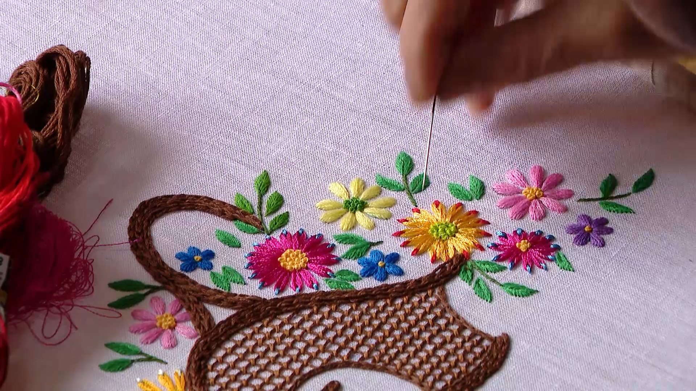
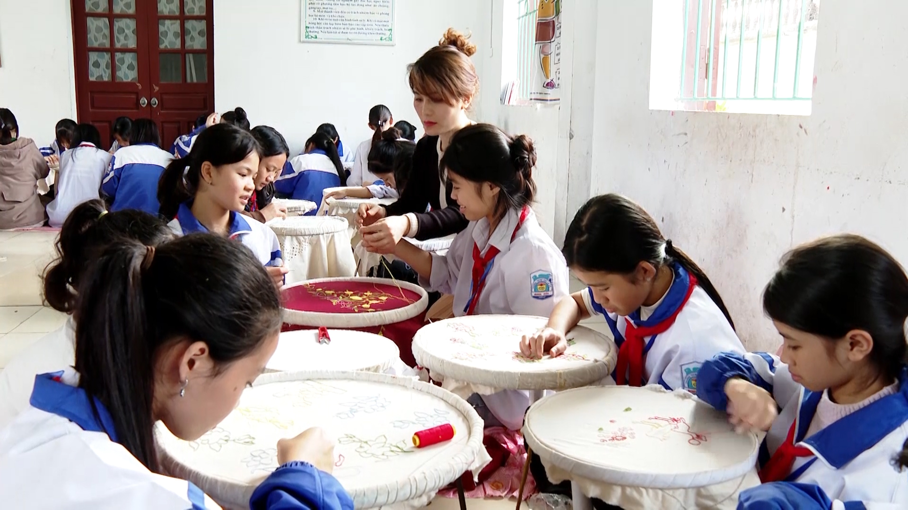

文林刺繡－越南的靈魂，蘊藏在每一針一線之中。
-
坐落在風景如畫的三谷碧洞地區，文林刺繡村靜謐而美麗，自古以來就是一處獨特的旅遊勝地，匯聚了越南傳統刺繡的精髓。文林不僅以其精美的手工藝品而聞名，更保存著寧平古都幾代工匠的文化歷史記憶和精神。
-
長老們說，凡林的刺繡自陳朝以來就已出現，距今已有七百多年歷史。與此相關的是林都國母親陳氏東的故事——她在王室重返此地時教導當地人刺繡。刺繡行業經歷了許多歷史起伏，持續傳承與發展，尤其是當村裡的工匠吸收更多西方蕾絲刺繡技術時，創造出傳統與現代的和諧結合，豐富了工藝村的價值。
-
Van
Lam蕾絲刺繡的亮點在於每根針和每根線的柔軟與精緻。這裡的產品不僅是日常必需品，更是充滿文化印記的藝術品。從桌布、窗簾、寢具到風景刺繡、肖像畫，所有作品皆由技藝嫻熟的雙手與工人的堅持不懈完成。每一件產品都展現出細緻、創意與熱忱，為Van
Lam蕾絲刺繡在國內外市場打造專屬品牌做出貢獻。

由萬林工藝村的工匠刺繡產品
-
為了保存和發展蕾絲刺繡專業，除了關注並創造各方面的條件外，相關分支及地方政府定期舉辦職業及職業訓練課程。這是推廣教育、喚起年輕一代自豪感、從而愛護並依照父親傳統職業選擇的方式。

